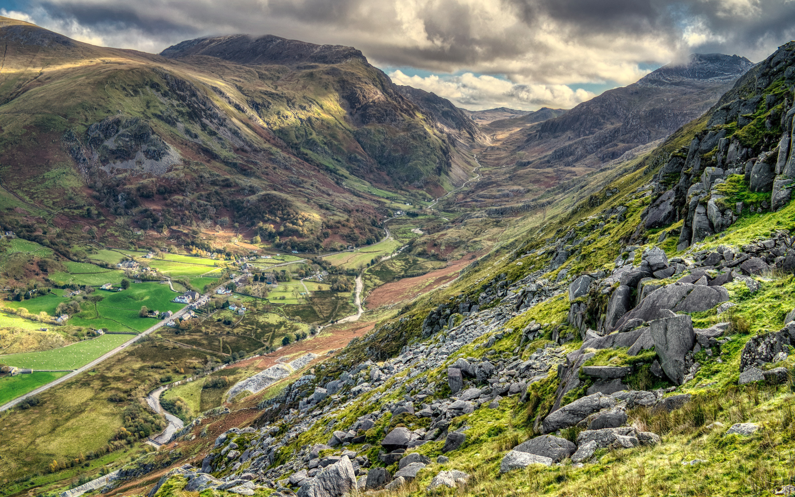

What
Look it's 2021, we've learnt that the world could end at any point. So we should probably see and do more things with friends and family.
In essence the three peaks are about walking up some fairly tall geographic landmarks in a short space of time. We're going to try to do this some time in 2021. If you're interested in walking and seeing more of the outdoors come along for a peak or two or three.
Plan
We're planning to walk the peaks in this order and hopefully within three days starting from around the end of March (26th - 30th):
- Snowdon, in Wales (1085m)
- Scafell Pike, in England (978m)
- Ben Nevis, in Scotland (1345m)
Map
We're starting from our home and driving our way up the country. Each peak is located near a visitor centre with parking and some facilities marked on the map.
How
Plans may change depending on guidance but for now just let one of us know if you're interested in joining us.
We'll let you know how we're planning to approach things and if you can join us feel free.